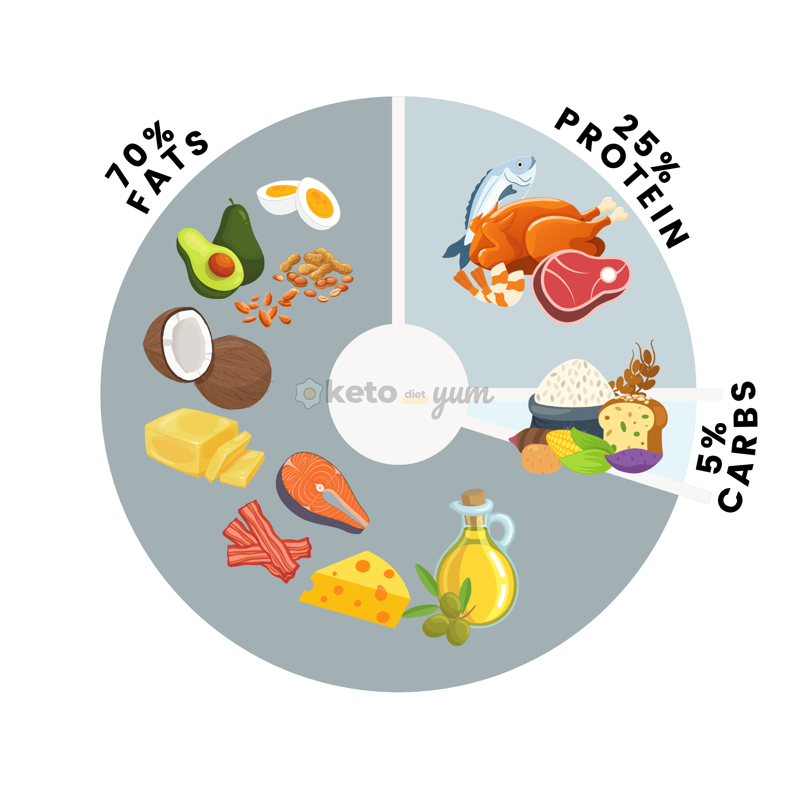

Diets to Try
- Mediterranean Diet: Emphasizes whole foods like fruits, vegetables, and fish, associated with reduced risk of heart disease.
- Keto Diet (Ketogenic Diet): High-fat, low-carb diet that induces ketosis, potentially aiding weight loss and managing blood sugar.
- Vegetarian Diet: Excludes meat and poultry, focusing on plant-based foods, associated with various health benefits.
Important Resources
